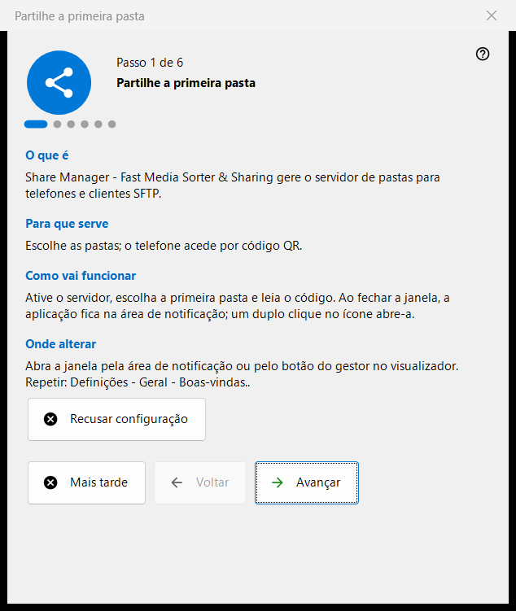
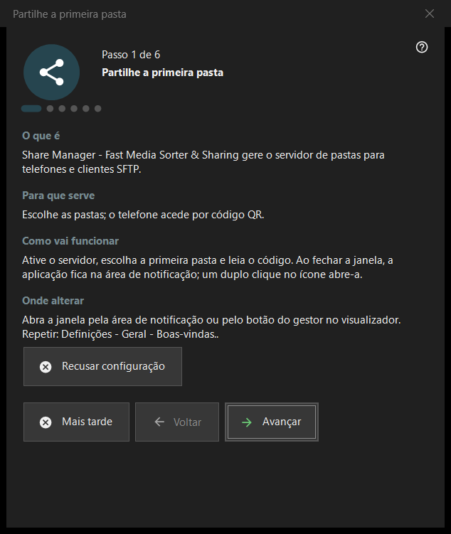

Compartilhe a primeira pasta
Finalidade
Um assistente de seis passos que leva do nada a uma pasta servida ao seu celular: ativa o servidor, escolhe a primeira pasta, define a porta e as opções básicas e termina com uma verificação do estado. Ele se abre na primeira inicialização do Share Manager e pode ser repetido a partir das configurações.


Nesta ordem
- Leia a introdução e pressione «Avançar».
- No passo «Ativar o servidor», pressione o botão uma vez e confirme o pedido de administrador.
- Escolha a primeira pasta e as suas opções.
- Mantenha a porta ou altere-a.
- Defina o idioma, a inicialização e as opções da rede local.
- Na última página, verifique o estado, abra o código QR e pressione «Concluir».
Os elementos
Passos e botões
O rodapé mostra «Passo N de 6». «Voltar» e «Avançar» mudam de página, «Avançar» passa a «Concluir» na última página, «Mais tarde» fecha o assistente e salva o que você já confirmou, e «Recusar configuração» o fecha definitivamente. Cada página tem quatro blocos curtos: «O que é», «Para que serve», «Como vai funcionar» e «Onde alterar».
Ativar o servidor
Até este passo o servidor está desligado. O botão de ativação pede direitos de administrador uma vez e acrescenta uma regra da Firewall do Windows para o programa. Se cancelar o pedido, o servidor continua desligado e pode tentar de novo; se já estiver ativado, a página indica que não é preciso mais nenhuma elevação.
Primeira pasta
Escolha uma pasta e depois o seu nome, perfil e acesso. «Adicionar o primeiro recurso agora..» abre o assistente de recursos. É preciso pelo menos uma pasta para continuar. As configurações seguem para o servidor, e as pastas continuam editáveis na lista da janela principal.
Porta
«Escolhida pelo sistema» atribui uma porta uma só vez e a mantém; «Porta fixa:» permite escrever um número próprio, por exemplo para o encaminhamento de portas do roteador. O número é escrito em cada código QR e em cada arquivo .fmscfg, por isso, alterá-lo mais tarde inutiliza os códigos já entregues. A regra da firewall pertence ao programa, não à porta.
Configurações básicas
«Idioma da interface», «Iniciar ao entrar no Windows», «Abrir a janela do gerenciador na inicialização» e «Só rede local (sem acesso à Internet)». O modo de rede local desativa o encaminhamento de portas e o endereço da internet. A opção de inicialização da versão da Store é gerenciada nas configurações do Windows.
Concluir
A última página verifica o servidor e as pastas escolhidas e mostra o resultado; um estado verde significa que há de fato um compartilhamento em funcionamento com acesso às pastas. «Código QR para o telefone» abre o código e «Atualizar» repete a verificação. Se o estado exigir atenção, corrija a causa na janela principal ou volte ao passo da pasta.
Repetir o assistente
Configurações - Geral - «Boas-vindas..» abre um menu com «Repetir configuração de pastas», que volta a iniciar este assistente.
Configurações do gerenciador · Configurações de compartilhamento SFTP · Configurações do servidor de troca